기계설계기사 (2014-05-25 기출문제)
1과목: 재료역학
1. 그림과 같이 서로 다른 2개의 봉에 의하여 AB봉이 수평으로 있다. AB봉을 수평으로 유지하기 위한 하중 P의 적용점의 위치 x의 값은? (단, A단에 연결된 봉의 세로탄성계수 210GPa, 길이는 3m, 단면적은 2cm2 이고, B단에 연결된 봉의 세로탄성계수는 70 GPa, 길이는 1.5m, 단면적은 4cm2 이며, 봉의 자중은 무시한다.)
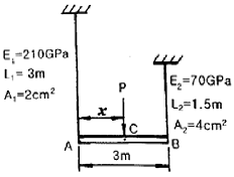
- 144.6 cm
- 171.4 cm
- 191.5 cm
- 213.2 cm
(정답률: 알수없음)

2. 깊이 L, 단면 2차 모멘트 I, 탄성 계수 E인 긴 기둥의 좌굴 하중 공식은
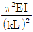
이다. 여기서 k의 값은 기둥의 지지 조건에 따른 유효 길이 계수라 한다. 양단 고정일 때 k의 값은?- 2
- 1
- 0.7
- 0.5
(정답률: 알수없음)
3. 다음 금속재료의 거동에 대한 일반적인 설명으로 틀린 것은?
- 재료에 가해지는 응력이 일정하더라도 오랜 시간이 경과하면 변형률이 증가할 수 있다.
- 재료의 거동이 탄성한도로 국한된다고 하더라도 반복하중이 작용하면 재료의 강도가 저하될 수 있다.
- 일반적으로 크리프는 고온보다 저온상태에서 더 잘 발생한다.
- 응력-변형률 곡선에서 하중을 가할 때와 제거할 때의 경로가 다르게 되는 현상을 히스테리시스라 한다.
(정답률: 알수없음)
4. 그림과 같은 형태로 분포하중을 받고 있는 단순지지보가 있다. 지지점 A에서의 반력 RA는 얼마인가? (단, 분포하중
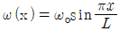
)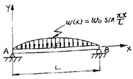
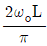
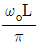
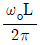
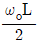
(정답률: 알수없음)
5. 단면계수가 0.01m3인 사각형 단면의 양단 고정보가 2m의 길이를 가지고 있다. 중앙에 최대 몇 kN의 집중하증을 가할 수 있는가? (단, 재료의 허용 굽힘응력은 80 MPa이다.)
- 800
- 1600
- 2400
- 3200
(정답률: 알수없음)
6. 원통형 압력용기에 내압 P가 작용할 때, 원통부에 발생하는 축 방향의 변형률 εx 및 원주 방향 변형률 εy는? (단, 강판의 두께 t는 원통의 지름 D에 비하여 충분히 작고, 강판 재료의 탄성계수 및 포아송비는각각 E, ν 이다.)
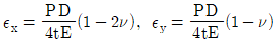
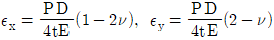
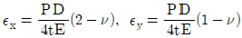
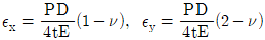
(정답률: 알수없음)
7. 길이가 L이고 직경이 d인 강봉을 벽 사이에 고정하였다. 그리고 온도를 △T만큼 상승시켰다면 이때 벽에 작용하는 힘은 어떻게 표현되나? (단, 강봉의 탄성계수는 E이고, 선팽창계수는 α이다.)
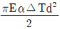
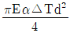
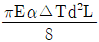
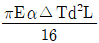
(정답률: 알수없음)
8. 그림과 같이 사각형 단면을 가진 단순보에서 최대 굽힘응력은 약 몇 MPa인가? (단, 보의 굽힘강성 EI는 일정하다.)
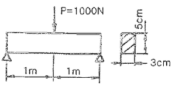
- 80
- 74.5
- 60
- 40
(정답률: 알수없음)
9. 그림과 같이 등분포하중 w가 가해지고 B점에서 지지되어 있는 고정 지지보가 있다. A점에 존재하는 반력 중 모멘트는?
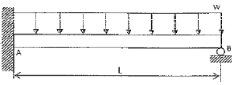
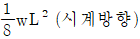
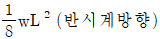
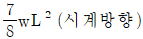
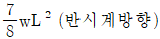
(정답률: 알수없음)
10. 다음과 같은 단면에 대한 2차 모멘트 Iz는?
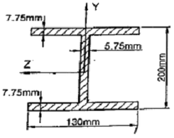
- 18.6×106 mm4
- 21.6×106 mm4
- 24.6×106 mm4
- 27.6×106 mm4
(정답률: 알수없음)
11. 그림과 같은 보에서 균일 분포하중(ω)과 집중하중(P)이 동시에 작용할 때 굽힘 모멘트의 최대값은?
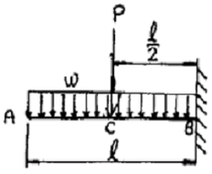
- ℓ(P-ωℓ)
- (ℓ/2)(P-ωℓ)
- ℓ(P+ωℓ)
- (ℓ/2)(P+ωℓ)
(정답률: 알수없음)
12. 단면적이 2cm2이고 길이가 4m인 환봉에 10kN의 축 방향 하중을 가하였다. 이 때 환봉에 발생한 응력은?
- 5000 N/m2
- 2500 N/m2
- 5×107 N/m2
- 5×105 N/m2
(정답률: 알수없음)
13. 평면응력 상태에 있는 어떤 재료가 2축 방향에 응력 σx＞σy＞0 가 작용하고 있을 때 임의의 경사 단면에 발생하는 법선 응력 σn은?
- σx cos2θ + σy sin2θ
- σx sin2θ + σy cos2θ
- σx cosθ + σy sinθ
- σx cos2θ + σy sin2θ
(정답률: 알수없음)
14. 지름 10mm이고, 길이가 3m인 원형 축이 716rpm으로 회전하고 있다. 이 축의 허용 전단응력이 160MPa인 경우 전달할 수 있는 최대 동력은 약 몇 kW 인가?
- 2.36
- 3.15
- 6.28
- 9.42
(정답률: 알수없음)
15. 다음 그림과 같은 구조물에서 비틀림각 θ는 약 몇 rad 인가? (단, 봉의 전단탄성계수 G=120GPa 이다.)
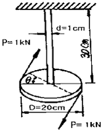
- 0.12
- 0.5
- 0.⑤
- 0.032
(정답률: 알수없음)
16. 일정한 두께를 갖는 반원통이 판에 의해서 A점에서 지지되고 있다. 이 때 B점에서 마찰이 존재하지 않는다고 가정할 때 A점에서의 반력은? (단, 원통 무게는 W, 반지름은 r이며, A, O, B 점은 지구중심방향으로 일직선에 놓여있다.)
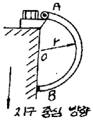
- 1.80W
- 1.⑤W
- 0.80W
- 0.50W
(정답률: 알수없음)
17. 그림과 같이 비틀림 하중을 받고 있는 중공축의 a-a 단면에서 비틀림 모멘트에 의한 최대 전단응력은? (단, 축의 외경은 10cm, 내경은 6cm 이다.)
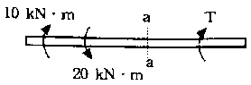
- 25.5MPa
- 36.5MPa
- 47.5MPa
- 58.5MPa
(정답률: 알수없음)
18. 길이 3m이고, 지름이 16mm인 원형 단면봉에 30kN의 축하중을 작용시켰을 때 탄성 신장량 2.2mm가 생겼다. 이 재료의 탄성계수는 약 및 GPa 인가?
- 203
- 20.3
- 136
- 13.7
(정답률: 알수없음)
19. 다음과 같은 외팔보에 집중하중과 모멘트가 자유단 B에 작용할 때 B점의 처짐은 몇 mm인가? (단, 굽힘강성 EI=10MN·m2 이고, 처짐 δ의 부후가 +이면 위로, -이면 아래로 처짐을 의미한다.)
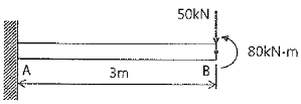
- +81
- -81
- +9
- -9
(정답률: 알수없음)
20. 재료의 허용 전단응력이 150N/mm2인 보에 굽힘 하중이 작용하여 전단력이 발생한다. 이 보의 단면은 정사각형으로 가로, 세로의 길이가 각각 5mm이다. 단면에 발생하는 최대 전단응력이 허용 전단응력보다 작게되기 위한 전단력의 최대치는 몇 N인가?
- 2500
- 3000
- 3750
- 5625
(정답률: 알수없음)
2과목: 기계제작법
21. 프레스 가공에서 전단가공의 종류가 아닌 것은?
- 블랭킹(blanking)
- 스웨이징(swaging)
- 트리밍(trimming)
- 셰이빙(shaving)
(정답률: 알수없음)
22. 경화된 작은 강철 볼(ball)을 공작물 표면에 분사하여 표면을 매끈하게 하는 동시에 피로 강도와 교 밖의 기계적 성질을 향상시키는데 사용하는 가공방법은?
- 액체 호닝
- 숏 피닝
- 수퍼피니싱
- 래핑
(정답률: 알수없음)
23. 선반 척 중에서 편심가공을 하기에 가장 적합한 것은?
- 연동척
- 단동척
- 유압척
- 콜릿척
(정답률: 알수없음)
24. 판재의 판금작업에서 스프링 백(spring back)에 대한 설명으로 옳은 것은?
- 스프링에서 장력의 세기를 나타내는 척도이다.
- 굽힘가공에서 스프링을 사용하여 굽일 수 있는 성능이다.
- 판재를 구부린 후 하중을 제거하면 잔류한 탄성에 의해 약간의 처음 상태로 되돌아오는것이다.
- 판재를 구부렸을 때 구부린 부분이 활 모양으로 되는 현상이다.
(정답률: 알수없음)
25. 절삭공구로 공작물을 가공 시 유동형 칩이 발생하는 조건으로 틀린 것은?
- 절삭깊이가 클 때
- 연성재료로 가공할 때
- 경사각이 클 때
- 절삭속도가 빠를 때
(정답률: 알수없음)
26. 래크 커터(rack cutter)로 기어를 가공하는 공작기계는?
- 기어 호빙 머신(gear hobbing machine)
- 펠로우즈 기어 셰이퍼(fellows gear shaper)
- 마그 기어 셰이퍼(maag gear shaper)
- 브로칭 머신 (broaching machine)
(정답률: 알수없음)
27. 표준 고속도강의 함유량 표기에서 18-4-1 중 18의 의미는?
- 탄소의 함유량
- 텅스텐의 함유량
- 크롬의 함유량
- 바나듐의 함유량
(정답률: 알수없음)
28. 주물에서 탕구계의 구성으로 틀린 것은?
- 탕류
- 탕구
- 주입구
- 코어
(정답률: 알수없음)
29. 초음파 가공의 특징으로 틀린 것은?
- 납, 구리, 연강의 가공이 쉽다.
- 복잡한 형상도 쉽게 가공한다.
- 공작물에 가공 변형이 남지 않는다.
- 부도체도 가공이 가능하다.
(정답률: 알수없음)
30. 프레스 가공에서 압축가공의 종류가 아닌 것은?
- 압인(coining)
- 엠보싱(embossing)
- 스웨이징(swaging)
- 블랭킹(blanking)
(정답률: 알수없음)
31. 칠드주철제 롤러로 두께 25mm의 연강판을 두께 21mm로 압연한다면 압하율은?
- 4%
- 6.25%
- 16%
- 19%
(정답률: 알수없음)
32. 어미나사의 피치가 6mm인 선반에서 1인치당 4산의 나사를 가공할 때, A와 D의 기어의 잇수는 각각 얼마인가? (단, A는 주축 기어의 잇수이고, D는 어미나사 기어의 잇수이다.)
- A=60, D=40
- A=40, D=60
- A=127, D=120
- A=120, D=127
(정답률: 알수없음)
33. 호칭 치수 200mm 인 사인바로 15°를 측정하려면, 사인바의 양단에 설치된 게이지 블록의 높이차를 약 몇 mm로 해야 하는가?
- 36.527
- 51.764
- 72.573
- 100.365
(정답률: 알수없음)
34. 게이지 블록, 한계게이지 등 게이지류, 볼, 롤러, 렌즈, 프리즘을 다듬질하는 가공법은?
- 호닝
- 래핑
- 샌드 블라스팅
- 수퍼피니싱
(정답률: 알수없음)
35. TIG 용접과 MIG 용접에 해당하는 용접은?
- 불황성가스 아크 용접
- 직류 아크 일미나이트계 피복 용접
- 교류 아크 셀룰로스계 피복 용접
- 서브머지드 아크 용접
(정답률: 알수없음)
36. 주물 결합에서 기공(blow hole)이 발생하는 원인으로 틀린 것은?
- 응고 전후의 수축 차이
- 용탕 속의 잔류 가스
- 주형의 수분과다
- 통기도 불량
(정답률: 알수없음)
37. 표면강화법 중 질화법에 대한 설명으로 틀린 것은?
- 인장강도 및 항복점이 높다.
- 마멸 및 부식에 대한 저항성이 크다.
- 경화층은 얇고 경도는 침 탄한 것보다 작다.
- 연신율과 내충격이 낮다.
(정답률: 알수없음)
38. 소재의 가장자리를 서로 겹치게 접은 다음 이 부분을 가입하여 이어주는 성형가공은?
- 엠보싱(embosssing)
- 스웨이징(swaging)
- 스피닝(spinning)
- 시밍(seaming)
(정답률: 알수없음)
39. 순철, 순동, 알루미늄과 같이 연성이 큰 재질의 공작물을 약간 큰 절삭 깊이로 가공할 때 많이 발생하는 칩은?
- 균열형 칩
- 유동형 칩
- 전단형 칩
- 열단형 칩
(정답률: 알수없음)
40. 선반에서 공작물의 절삭속도(V)를 구하는 공식은? (단, d: 공작물의 지름(mm), n: 공작물의 회전수(rpm), V: 절삭속도(m/min))
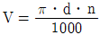
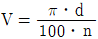
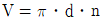
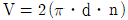
(정답률: 알수없음)
3과목: 기계설계 및 기계재료
41. 롤러 베어링에서 기본정격수명을 L(rev), 베어링의 기본 동정격하중을 C(N), 베어링에 발생하는 동등가하중을 P(N)라 할 때 이에 대한 관계식으로 옳은 것은?
- L=(P/C)3×106
- L=(C/P)3×106
- L=(P/C)10/3×106
- L=(C/P)10/3×106
(정답률: 알수없음)
42. 마이터 기어(miter gear)의 모듈이 4, 잇수가 20일 때 바깥지름은 약 몇 mm 인가?
- 62.8
- 78.3
- 85.7
- 96.5
(정답률: 알수없음)
43. 피치가 20mm인 2줄 나사를 두 바퀴 회전시키면 축 방향으로 움직이는 거리는 몇 mm 인가?
- 10
- 20
- 40
- 80
(정답률: 알수없음)
44. 기어의 물림률을 높이기 위한 방법이 아닌 것은?
- 접촉호의 길이를 크게 한다.
- 이 끝 높이를 크게 한다.
- 사이클로이드 기어에서는 구름원의 지름을 크게 한다.
- 인벌류트 기어에서는 압력각을 크게 한다.
(정답률: 알수없음)
45. 축의 홈 속에서 자유로이 기울어 질수 있어 키가 자동적으로 축과 보스에 조정되며, 고속 저토크 축에 주로 사용되는 것으로 테이퍼진 축을 결합할 때 편리하게 사용되는 것은?
- 둥근 키
- 반달 키
- 묻힘 키
- 평행 키
(정답률: 알수없음)
46. 판두께 14mm, 리벳 구멍의 지름 22mm, 피치 54mm의 1열 리벳 겹치기 이용이 있다. 1피치당 하중을 13.24kN으로 하면 판에 생기는 인장응력은 약 몇 MPa 인가?
- 23.57
- 25.68
- 29.55
- 33.79
(정답률: 알수없음)
47. 블록 브레이크에서 브레이크에 발생하는 열의 소산과 관련된 브레이크 용량 [
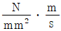
]을 표시하는 관계식으로 옳은 것은?- 발열계수 × 압력계수
- 속도 × 압력 × 비열
- 마찰계수 × 압력 × 속도
- 안전계수 × 속도계수
(정답률: 알수없음)
48. 코일 스프링에서 축방향 작용하중을 P, 코일의 유효지름을 D, 소선의 지름을 d, Whal의 응력수정계수를 K라 할 때 최대전단응력 τmax를 구하는 식으로 옳은 것은?
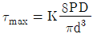
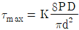
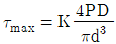
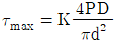
(정답률: 알수없음)
49. 원동차의 지름이 300mm, 종동차의 지름이 450mm, 폭이 75mm인 외접 원통 마찰차가 있다. 원동차가 300rpm으로 회전할 때 최대 전달 동력은 약 및 kW인가? (단, 접촉부의 허용 압력은 20N/mm, 마찰 계수는 0.217 이다.)
- 1.41
- 1.53
- 1.68
- 1.89
(정답률: 알수없음)
50. 1초당 50리터의 물을 수송하는 바깥지름 200mm, 두께 6mm인 강관에 대해 설계 검증하고자 할 때 다음 중 틀린 것은? (단, 관의 허용응력은 100MPa이며, 기타 사항은 무시한다.)
- 관내부의 단면적은 약 0.027759m2 이다.
- 관내부의 평균 유속은 약 3.2m/s 이다.
- 시간당 유량은 약 180m3/h 이다.
- 관에는 최대 약 6MPa의 내압을 가할 수 있다.
(정답률: 알수없음)
51. 다음 중 불변강의 종류가 아닌 것은?
- 인바
- 코엘린바
- 쾌스테르바
- 엘린바
(정답률: 알수없음)
52. 특수강에 첨가도는 특수원소의 효과가 아닌 것은?
- Ms, Mf점을 상승시킨다.
- 질량효과를 적게 한다.
- 담금질성을 좋게 한다.
- 상부 임계 냉각속도를 저하시킨다.
(정답률: 알수없음)
53. 다음 중 Ni-Fe계 합금인 인바(invar)를 바르게 설명한 것은?
- Ni 35~36%, C 0.1~0.3%, Mn 0.4% 와 Fe 의 합금으로 내식성이 우수하고, 상온부근에서 열팽창계수가 매우 작아 표준자, 시계의 추, 바이메탈 등에 사용된다.
- Ni 50%, Fe 50% 합금으로 초투자율, 포화 자기, 전기 저항이 크므로 저출력 변성기, 저주파 변성기 등의 자심으로 널리 사용된다.
- Ni에 Cr 13~21%, Fe 6.5%를 함유한 강으로 내식성, 내열성 우수하여 다이얼게이지, 유량계 등에 사용된다.
- Ni 40~45%, Mo 1.4%~2.0%에 나머지 Fe의 합금으로 내식성이우수하여 조선에 사용되는 부품의 재료로 이용된다.
(정답률: 알수없음)
54. Fe-C 상태도에서 공석강의 탄소함유량은 약 얼마인가?
- 0.5%
- 0.8%
- 1.0%
- 1.5%
(정답률: 알수없음)
55. 다음 합금 중 다이캐스팅용 아연합금은?
- Zamak
- Y 합금
- RR 50
- Lo - Ex
(정답률: 알수없음)
56. 피아노선의 조직으로 가장 적당한 것은?
- austenite
- ferrite
- sorbite
- martensite
(정답률: 알수없음)
57. Mo 금속은 어떤 결정격자로 되어 있는가?
- 면심입방격자
- 체심입방격자
- 조밀육방격자
- 정방격자
(정답률: 알수없음)
58. 재료의 표면을 경화시키기 위해 침탄을 하고자 한다. 침탄효과가 가장 좋은 재료는?
- 구상흑연 주철
- Ferrite형 스테인리스강
- 피아노선
- 고탄소강
(정답률: 알수없음)
59. 산화알루미나(Al2O3) 등을 주성분으로 하며 철과 친화력이 없고, 열을 흡수하지 않으므로 공구를 과열시키지 않아 고속 정밀가공에 적합한 공구의 재질은?
- 세라믹
- 인코넬
- 고속도강
- 탄소공구강
(정답률: 알수없음)
60. 편석의 균일화 및 황화물의 편석을 제거하는 열처리 방법으로 가장 적합한 것은?
- 노멀라이징
- 변태점 이하 풀림
- 재결정 풀림
- 확산 풀림
(정답률: 알수없음)
4과목: 기구학 및 CAD
61. 일반적인 유한요소해석 (finite element analysis)에서 전처리작업 (pre-processsing)에 해당하지 않은 것은?
- 모델 간단화(simplification)
- 솔리드 모델링 생성(make new features)
- 유한요소망 생성(mesh generation)
- 외부하증 조건입력(apply loads and constraints)
(정답률: 알수없음)
62. 곡면을 표현하는 수식 중 B-spline 곡면에서 호모지니어스 좌표를 도입한 것은?
- 쿤스 패치
- Bezier 곡면
- Bicubic patch
- NURBS 곡면
(정답률: 알수없음)
63. 평평한 판에 가로, 세로 방향을 전류가 흘러 그 판위에 놓여진 마우스 형태의 퍽의 x, y 방항의 절대위치를 입력할 수 있으며, 일반적으로 기존의 도면이나 도형을 따라가면서 좌표값을 입력 시키는 용도로 사용되는 것은 무엇인가?
- 트랙볼
- 마우스
- 디지타이저
- 라이트펜
(정답률: 알수없음)
64. 소릴드 모델 중 CSG 표현법과 비교한 경계표현법(B-rep)의 장점이 아닌 것은?
- 투영도나 투시도를 용이하게 표시할 수 있다.
- 부피나 표면적을 빨리 계산할 수 있다.
- 모따기, 라운딩 같은 모델의 국부변형이 쉽다.
- 내부 데이터의 구조가 간단하다.
(정답률: 알수없음)
65. 다음 중 CSG 트리구조에 의한 솔리드 모델링의 장점이 아닌 것은?
- 라운딩과 같은 국부 변형기능을 쉽게 구현할 수 있다.
- 자료구조가 간단하다.
- CSG 트리에 저장된 솔리드는 항상 구현이 가능한 유효한 솔리드이다.
- 파라메트릭 모델링을 쉽게 구현할 수 있다.
(정답률: 알수없음)
66. 렌더링 기법 중 하나의 물체가 멀리 떨어진 점광원으로부터 조명을 받는 비교적 단순한 경우가 아닌 여러개의 물체가 있거나 특히 이들 중 일부가 투명하거나 굴절을 일으키는 복잡힌 상황에서 적용하기 적합한 방법은?
- 고라드(Gouraud) 방법
- 퐁(phong) 방법
- 램버트(Lambert) 방법
- 광선투자(ray tracing) 방법
(정답률: 알수없음)
67. 아래 그림과 같은 파라메트릭 설계가 있다(초기 L=150). 이때, 변수 L의 값이 300으로 바뀐다면, d의 값은? (단, 원의 반지름은 1/5L 이다.)
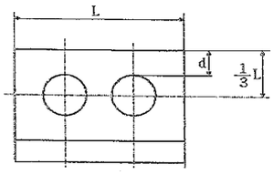
- 30
- 40
- 50
- 60
(정답률: 알수없음)
68. 다음 중 개별적인 생산 및 설계시스템 간 데이터 공유를 위해 생산정보모델에 대한 자료 교환을 위한 표준으로 국제표준기구에서 설정된 것은?
- IGES
- DXF
- STEP
- STL
(정답률: 알수없음)
69. 다음 중 비다양체(non-manifold solid)를 가장 잘 설명한 것은?
- 솔리드 모델을 기반으로 불리안 연산(Boolean operation)의 결과로 나타나는 3차원 물체
- 솔리드 모델, 와이어프레임 모델, 서피스 모델을 동시에 적용하여 표현한 3차원 물체
- 경계표현법(B-rep)으로 표현되며 곡면으로 둘러싸인 3차원 물체
- 와이어 프레임모델과 서피스 모델을 동시에 적용하여 표현한 3차원 물체
(정답률: 알수없음)
70. 그림과 같은 구면좌표계에서 p, θ, Ф는 점 P의 좌표를 나타낸다. p, θ, Ф에 관하여 3차원 직교좌표게(x,y,z)와 구면좌표게(p,θ,Ф)의 관계를 올바르게 나타낸 것은?
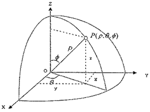
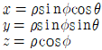
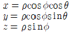
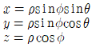
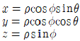
(정답률: 알수없음)
71. 사일런트 체인 전동장치에서 스프로킷 휠 이의 양면이 이루는 축각(β)는? (단, α는 면각, Z는 잇수이다.)
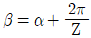
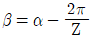
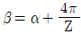
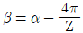
(정답률: 알수없음)
72. 케네디의 정리(Kennedy's theorem)는 무엇을 표현한 것인가?
- 자유도에 관한 정리
- 순간중심에 관한 정리
- 병진운동과 회전운동의 관계
- 속도의 도식적 해법에 관한 정리
(정답률: 알수없음)
73. 한 쌍의 스퍼기어가 맞물려 돌아갈 때 각 기어의 피치원지름을 D1, D2, 잇수를 Z1, Z2, 회전수를 n1, n2 라 하면 속도비(i)는?
- n2/n1=4Z1/Z2
- n2/n1=Z2/4Z1
- n2/n1=Z1/Z2
- n2/n1=Z2/Z1
(정답률: 알수없음)
74. 모듈 m=20 이고 치수가 각각 15개, 20개인 한 쌍의 외접하는 평기어가 있다. 두 기어 간의 축간 거리(mm)는 얼마인가?
- 300
- 350
- 400
- 450
(정답률: 알수없음)
75. 왕복 이중 슬라이더 기구의 대표적인 것으로 경사각이 90°로 만들어져 소형냉장고 등의 냄매 압축기로 쓰이는 것은?
- 진자 펌프(pendulum pump)
- 타원 컴퍼스(elliptic trammels)
- 스코치 요크(scotch yoke)
- 올덤 커플링(oldhams coupling)
(정답률: 알수없음)
76. 평벨트 전동 기구에 대한 설명으로 틀린 것은?
- 평벨트 전동 기구는 두 축간 거리가 상당히 떨어져 있는 경우의 회전을 전달하는 데 펀리하다.
- 벨트 구동에 있어서의 각속도비는 종동 바퀴의 반지름에 비례한다.
- 동력 전달은 벨트와 벨트 바퀴의 접촉면에 있어서의 마찰력에 의존하기에 정확한 속도비를 얻기 어렵다.
- 벨트의 감아 걸기 방식으로 엇걸기를 하면 두 축의 회전방향을 반대로할 수 있다.
(정답률: 알수없음)
77. 홈 마찰차에서 홈의 각도(α)=30°, 마찰계수(μ)=0.2 일 때 유효 마찰계수(μ′)는?
- 0.11
- 0.22
- 0.33
- 0.44
(정답률: 알수없음)
78. 모듈(m)에 원주율(π)을 곱한 것을 무엇으로 표시하는가?
- 원주 피치
- 지름 피치
- 이끝 높이
- 피치원 지름
(정답률: 알수없음)
79. 종동절의 상승·하강을 모두 캠으로 하는 것은 무엇인가?
- 확동 캠(positve motion cam)
- 접선 캠(tangent cam)
- 편심원판 캠(circular disc cam)
- 경사판 캠(swash plate cam)
(정답률: 알수없음)
80. 캠 설계 시 압력각을 작게 하는 방법이 아닌 것은?
- 종동절의 전양정(全揚程)을 크게 한다
- 기초원의 지름을 크게 한다.
- 주어진 종동절의 변위에 대한 캠의 회전각을 크게 한다.
- 종동절의 편심량을 변화시킨다.
(정답률: 알수없음)
A단에서의 반력은 P이고, B단에서의 반력은 2P이다. 이는 두 봉이 AB봉을 수평으로 유지하기 위해 AB봉에 작용하는 힘이기도 하다.
A단에서의 모멘트는 P*x이고, B단에서의 모멘트는 2P*(3-x)이다. 이 두 모멘트가 0이 되어야 하므로, P*x = 2P*(3-x)이다.
이를 정리하면 x = 1.5m 이다. 하지만 이는 A단과 B단에서의 반력의 크기를 고려하지 않은 값이다.
A단에서의 반력은 P = F/A = σ*A*L/L = 210*10^9 * 2*10^-4 * 3 / 3 = 42 N이다. (σ는 응력, A는 단면적, L은 길이)
B단에서의 반력은 2P = 84 N이다.
따라서, A단에서의 모멘트는 42*x이고, B단에서의 모멘트는 84*(3-x)이다. 이 두 모멘트가 0이 되어야 하므로, 42*x = 84*(3-x)이다.
이를 정리하면 x = 1.714m 이다. 이 값은 단위를 cm로 바꾸면 171.4 cm가 된다. 따라서 정답은 "171.4 cm"이다.